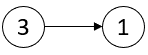
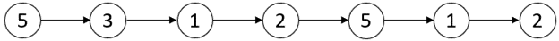
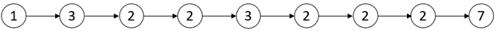

| Category | Difficulty | Likes | Dislikes |
|---|---|---|---|
| Algorithms | Medium | 1376 | 72 |
facebook | bloomberg | amazon | google | microsoft | info-edge
A critical point in a linked list is defined as either a local maxima or a local minima.
A node is a local maxima if the current node has a value strictly greater than the previous node and the next node.
A node is a local minima if the current node has a value strictly smaller than the previous node and the next node.
Note that a node can only be a local maxima/minima if there exists both a previous node and a next node.
Given a linked list head, return an array of length 2 containing [minDistance, maxDistance] where minDistance is the minimum distance between any two distinct critical points and maxDistance is the maximum distance between any two distinct critical points. If there are fewer than two critical points, return [-1, -1].
Example 1:

Input: head = [3,1]
Output: [-1,-1]
Explanation: There are no critical points in [3,1].Example 2:

Input: head = [5,3,1,2,5,1,2]
Output: [1,3]
Explanation: There are three critical points:
- [5,3,1,2,5,1,2]: The third node is a local minima because 1 is less than 3 and 2.
- [5,3,1,2,5,1,2]: The fifth node is a local maxima because 5 is greater than 2 and 1.
- [5,3,1,2,5,1,2]: The sixth node is a local minima because 1 is less than 5 and 2.
The minimum distance is between the fifth and the sixth node. minDistance = 6 - 5 = 1.
The maximum distance is between the third and the sixth node. maxDistance = 6 - 3 = 3.Example 3:

Input: head = [1,3,2,2,3,2,2,2,7]
Output: [3,3]
Explanation: There are two critical points:
- [1,3,2,2,3,2,2,2,7]: The second node is a local maxima because 3 is greater than 1 and 2.
- [1,3,2,2,3,2,2,2,7]: The fifth node is a local maxima because 3 is greater than 2 and 2.
Both the minimum and maximum distances are between the second and the fifth node.
Thus, minDistance and maxDistance is 5 - 2 = 3.
Note that the last node is not considered a local maxima because it does not have a next node.
Constraints:
[2, 105].1 <= Node.val <= 105